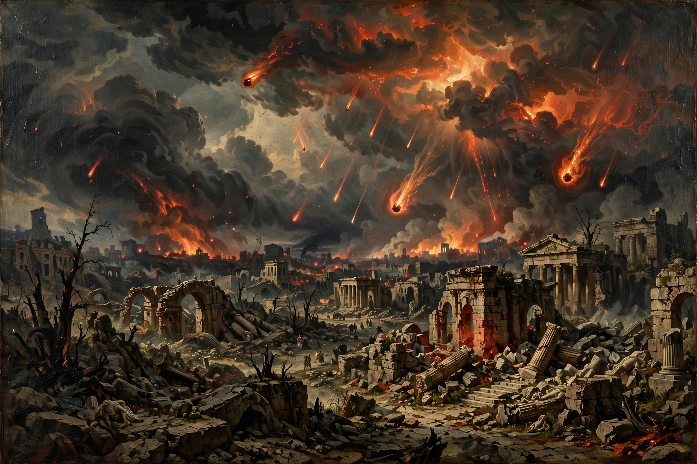

Apocalypticism is the religious belief that the end of the world is imminent, even within one's own lifetime. This belief is usually accompanied by the idea that civilization will soon come to a tumultuous end due to some sort of catastrophic global event. Apocalypticism is one aspect of eschatology in certain religions — the part of theology concerned with the final events of history, or the ultimate destiny of humanity.

The worldview emerged in Second Temple Judaism, influenced by Persian Zoroastrian dualism and by historical crises such as the Babylonian exile and the persecution under Antiochus IV Epiphanes. It divides history into two ages — a present age dominated by evil and a coming age of divine rule — separated by a final judgment, resurrection of the dead, and cosmic renewal.
Early Christianity inherited Jewish apocalyptic expectation: Jesus and Paul are widely understood by scholars to have proclaimed the imminent arrival of the Kingdom of God. Millenarian movements throughout history — from the medieval flagellants and the Münster Anabaptists to the Millerites of the 1840s and modern dispensationalist movements — have repeatedly announced dates for the end. Analogous end-time doctrines exist in Islam (belief in the Mahdi and the Day of Judgment) and in many new religious movements, as well as secular variants focused on nuclear war, pandemic, or climate catastrophe.
In contemporary discourse, "apocalyptic" is often used loosely for any catastrophic scenario, including climate change, artificial intelligence risk, and pandemics. Scholars distinguish religious apocalypticism, with its expectation of supernatural resolution, from purely secular catastrophism.